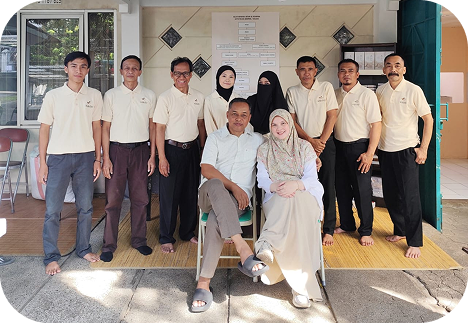

Sejarah
Kaldo diambil dari kata "caldo" dalam bahasa Italia yang berarti hangat. Kaldo berdiri dari tahun 2022, yang didirikan oleh Ibu Octarina atau lebih dikenal Ibu Nina.
Kaldo memulai usahanya pertama kali di bidang raw material (bahan mentah) minyak atsiri untuk disuplai ke pabrik-pabrik sebagai bahan baku kosmetik, farmasi, dan industri parfume.
Bulan November 2021 Kaldo mulai merintis usaha retail essentail oil sebagai minyak aromaterapi karena semakin meningkatnya kesadaran masyarakat untuk menggunakan bahan dasar alam "back to nature", khususnya yang berasal dari alam Indonesia.

Profil
Kaldo adalah toko yang menjual produk natural aromaterapi berbasis UMKM. Walaupun UMKM, toko ini sudah memiliki NIB 1910220081791. Kaldo bisa termasuk ke dalam kategori home & toilettris. Kaldo meracik dari campuran minyak yang mengandung aroma essential oil.
Visi & Misi
Visi :
Menjadi pilihan utama natural aromaterapi di Indonesia.
Misi :
Menjadikan natural aromaterapi Kaldo sebagai solusi hidup sehat dan harmoni.
Melakukan inovasi produk dan varian baru aromaterapi.
Menjamin penggunaan bahan baku berkualitas tinggi dan alami.
Meningkatkan kesadaran masyarakat akan pentingnya "back to nature".